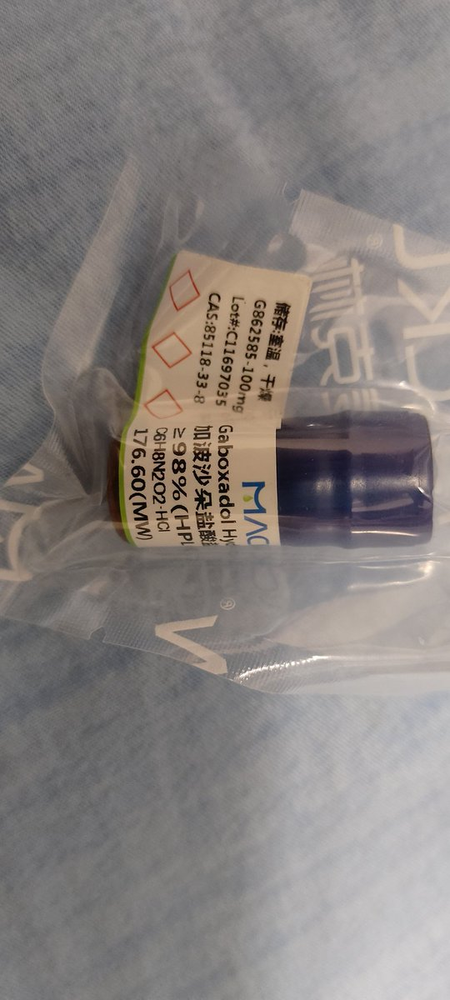

Rinko
@Rinko_zero8964
@Citrus_amara

Shikieiki Yamaxanadu
@_Shikieiki
加波沙朵25mg报告 非空腹 刚吃完饭
约20～30分钟困意开始涌现
第54分钟，很困，走路不稳，走不直，很强的镇静感，没有幻觉，视听都没有任何偏差
第99分钟，困死了，在不刻意保持清醒的情况下应该已经睡着了，恶心感逐渐泛起，是晕车的恶心感(对我来说)，身体没有任何感觉，没有肌肉松弛之类的感觉(续) https://t.co/v4m2vXaMKZ
🍊苦橙🍊8️⃣9️⃣6️⃣4️⃣
@Citrus_amara
我真特别想玩加波纱朵有没有玩过的说一下...！